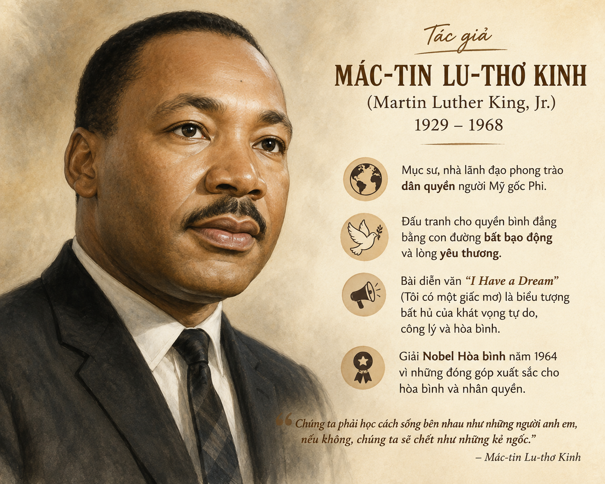
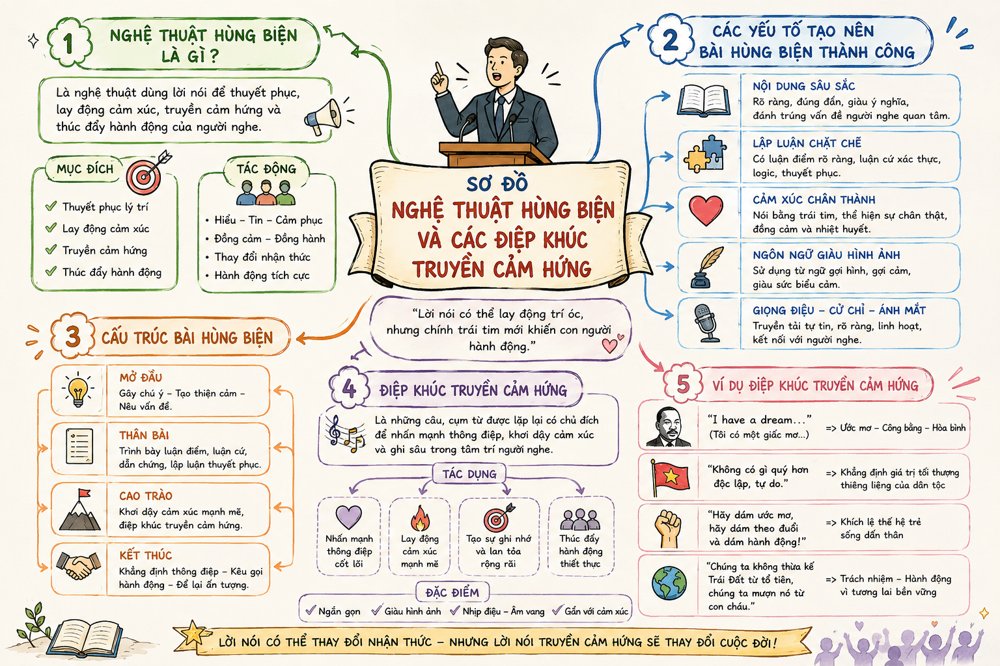

— Mác-tin Lu-thơ Kinh (Martin Luther King Jr.) —
Trong lịch sử của mỗi dân tộc và nhân loại, có những văn kiện chính trị không chỉ mang giá trị pháp lý, thời sự mà còn trở thành những áng văn chương giàu tính nghệ thuật, giàu cảm xúc và có sức lay động sâu sắc tâm hồn hàng triệu người qua nhiều thế hệ.
1. Trong lịch sử của dân tộc, có những trường hợp một văn kiện chính trị lại trở thành một áng văn chương có sức lay động lớn. Bạn hãy kể tên một vài tác phẩm như vậy.
2. Nhiều nhân vật lịch sử đã thể hiện niềm ước mơ về hạnh phúc cho nhân dân, bình yên cho đất nước trong những câu thơ, câu văn hoặc những lời phát biểu đầy tâm huyết. Bạn hãy nêu một ví dụ cụ thể để chứng minh ý kiến trên.
Gợi ý câu 1: Một số tác phẩm tiêu biểu trong văn học Việt Nam: "Nam quốc sơn hà" (Lý Thường Kiệt), "Hịch tướng sĩ" (Trần Quốc Tuấn), "Bình Ngô đại cáo" (Nguyễn Trãi), "Tuyên ngôn Độc lập" (Hồ Chí Minh)...
Gợi ý câu 2: Ví dụ: Lời tâm nguyện của Chủ tịch Hồ Chí Minh: "Tôi chỉ có một sự ham muốn, ham muốn tột bậc, là làm sao cho nước ta được hoàn toàn độc lập, dân ta được hoàn toàn tự do, đồng bào ai cũng có cơm ăn áo mặc, ai cũng được học hành."
• Là nhà hoạt động dân quyền người Mỹ gốc Phi nổi tiếng thế giới, mục sư Dòng Báp-tít.
• Lãnh đạo phong trào đấu tranh bất bạo động chống lại sự phân biệt chủng tộc đối với người da đen tại Mỹ.
• Năm 1964, ông vinh dự nhận Giải Nobel Hòa bình cho những đóng góp to lớn vì bình đẳng xã hội và nhân quyền.
• Được nhớ đến là một trong những nhà hùng biện kiệt xuất nhất trong lịch sử hiện đại.

Hình 1: Tác giả Mác-tin Lu-thơ Kinh• Bối cảnh bài diễn văn: Được đọc vào ngày 28/8/1963 trong cuộc tuần hành lịch sử đòi việc làm và tự do tại thủ đô Oa-xinh-tơn (Washington D.C.) trước hơn 250.000 người tại Đài kỷ niệm Lin-côn (Lincoln Memorial).
• Thể loại: Diễn văn chính trị / Văn bản nghị luận xã hội.
• Xuất xứ: Trích từ cuốn "Bước đến tự do, Câu chuyện Mon-ga-mơ-ri" (Montgomery).
• Ý nghĩa tiêu đề: Biểu tượng cho khát vọng bình đẳng, công lý và tình huynh đệ giữa mọi chủng tộc trên đất nước Mỹ.
Khi đọc hiểu bài diễn văn nghị luận trực tiếp, cần chú ý đến hoàn cảnh diễn xướng, tính chất giao tiếp hướng tới công chúng, sự kết hợp giữa lập luận logic sắc bén và các biện pháp tu từ hùng biện, giàu cảm xúc truyền cảm hứng.
📌 Bối cảnh lịch sử và thực trạng sau 100 năm Tuyên ngôn Giải phóng Nô lệ (1863 - 1963):
"Một trăm năm sau, người da đen vẫn chưa được tự do... vẫn bị trói trong gông cùm xiềng xích của sự phân biệt chủng tộc... sống cô đơn trên hòn đảo nghèo đói giữa đại dương mênh mông thịnh vượng."
❓ [Câu hỏi trong bài]: Xác định mục đích hướng tới của tác giả ở bài diễn văn này?
❓ [Câu hỏi trong bài]: Ý nghĩa của việc dẫn ra văn kiện lịch sử nổi tiếng (Tuyên ngôn Giải phóng Nô lệ)?
"Đây không còn là lúc để lẩn tránh trong sự xoa dịu xa xỉ... Đây là lúc hiện thực hoá công lý cho tất cả những người con của Tạo Hoá."
❓ [Theo dõi]: Cách tác giả nói về thời điểm cần thiết để đòi công lý và quan điểm đấu tranh?
Điệp từ "Chúng ta không thể hài lòng..." khi:
❓ [Nhận xét]: Qua cách diễn đạt và đưa bằng chứng, tác giả thể hiện thái độ và tình cảm như thế nào?
Các điệp ngữ nghệ thuật định hình cấu trúc bài diễn văn:
| STT | Cấu trúc điệp từ / Điệp ngữ | Nội dung gửi gắm | Hiệu quả nghệ thuật |
|---|---|---|---|
| 1 | "Một trăm năm sau..." | Thực trạng bất công bám rễ kéo dài. | Tạo ấn tượng gián đoạn, hẫng hẫng về thời gian. |
| 2 | "Đây là lúc..." / "Ngay Bây Giờ" | Nhấn mạnh tính cấp thiết phải hành động. | Thúc giục, tăng nhịp điệu dồn dập. |
| 3 | "Chúng ta không thể hài lòng..." | Khẳng định quyết tâm đấu tranh đến cùng. | Tạo sức mạnh đanh thép, không gục ngã. |
| 4 | "Tôi mơ rằng..." (I have a dream) | Khát vọng về sự bình đẳng, tình anh em. | Truyền cảm hứng, thắp sáng hy vọng. |
| 5 | "Hãy để tự do ngân vang..." | Tự do phủ sóng khắp mọi miền đất nước. | Âm hưởng ngân vang, bay bổng, hùng vĩ. |

Hình 2: Sơ đồ nghệ thuật hùng biện và các điệp khúc truyền cảm hứng❓ [Nghệ thuật]: Biện pháp tu từ chính được tác giả sử dụng nhằm tác động mạnh đến người nghe?
❓ [Đoạn kết]: Ấn tượng và cảm xúc về đoạn kết của bài diễn văn?
Bài diễn văn "I Have a Dream" không chỉ làm rung chuyển nước Mỹ năm 1963 mà còn được Thư viện Quốc hội Mỹ đưa vào Danh mục Ghi âm Quốc gia. Lời nói của Martin Luther King đã trở thành biểu tượng toàn cầu cho các phong trào đấu tranh vì nhân quyền và bình đẳng trên khắp thế giới. Ngày Thứ Hai thứ ba của tháng Một hằng năm được Mỹ công nhận là Ngày Martin Luther King Jr. - một ngày lễ quốc gia.
Vận dụng nghệ thuật sử dụng điệp cấu trúc và giọng điệu truyền cảm hứng vào các bài phát biểu, bài văn nghị luận xã hội nhằm bày tỏ quan điểm, ước mơ và lý tưởng sống của bản thân trước tập thể.
Trả lời 10 câu hỏi để làm chủ kiến thức bài học "Tôi có một ước mơ"!